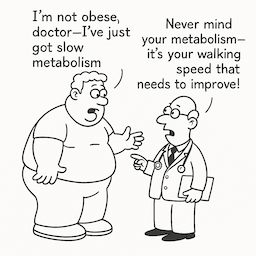
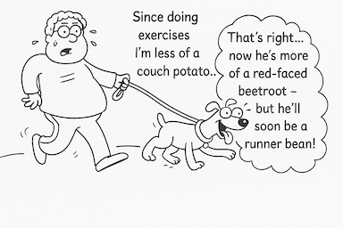
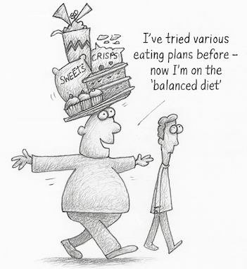
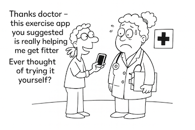
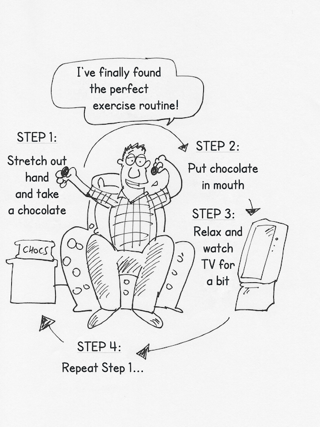
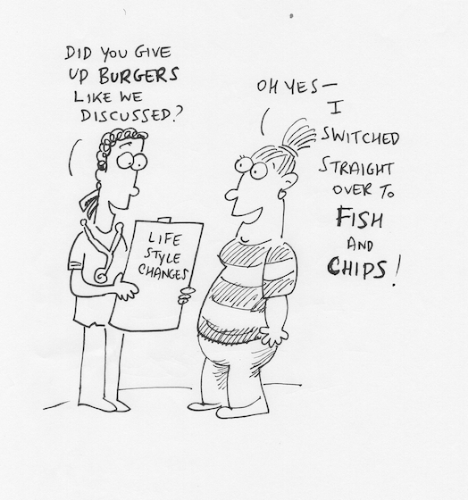

Case Studies
Real stories from people who have faced weight challenges. Filter by category to find stories relevant to your situation.
Alex joined a health club with his wife but struggles to prioritize exercise. He observes coworkers falling into negative cycles: obsessed about weight, strict diet/exercise, then binge, over-eat, feel guilty - a repetitive saga.
Rachel lost two stones through strict calorie restriction and swimming three times a week. But once she reached her target, exercise became tedious. She sees food as a comforter, preferring curry or pizza when tired rather than salad.

Debbie uses junk food as comfort and struggles with willpower. She tried hypnotism which worked temporarily. Stress from starting a new business led her to eat twice in the evening.
Joe, aged 71, has never been fat. He's always active - golf 3x/week, gym with his brother, hill walking, occasional jogs. He eats no breakfast, has muesli/fruit for lunch, cooks healthy supper with small portions, avoids bread, eats slowly. He drinks one glass of wine daily. He thinks about healthy weight constantly and rarely breaches his pattern.
Janet, aged 58, works in the prison service. A blood test showed pre-diabetes, motivating her to lose weight. Her GP signed her up to the 'second nature' app. She lost 1.5 stones in 10 weeks but struggles to find time to exercise after work. She avoids 'fat jabs' after seeing friends who look 'ill and scraggy'.
Tracy lost half a stone by giving up chocolate and walking at lunch. She cycles on her exercise bike at home while reading books, imagining herself in a glamorous dress for motivation. She aims for 20 minutes cycling daily but accepts ten minutes is better than nothing.
Brian has two dogs and walks them for an hour every evening whatever the weather. At lunchtime he walks briskly around the hospital site where he works. He believes in healthy living as a whole package: regular physical activity, balanced diet, and time for leisure and family.


Melvyn, aged 59, became a meter reader after being made redundant. Walking 8 miles a day for his job meant he lost 2.5 stones without trying, despite eating more. He swims once a week to keep his joints loose.
Phil is naturally slim. He believes 'the nation is getting increasingly obese without eating more calories - the difference is less exercise.' He cycles at lunchtime, enjoys long country hikes at weekends, and takes days off to walk with a rambling group.

Sue carries bags of sugar equivalent to her excess weight to understand the burden. She cycles about 40 miles per week. She gauges weight by her tummy size - no scales in her house. She has never been on a diet.
Sarah (Runner) was over 16 stone in her thirties when she saw a 'slimmer of the year' on TV. She started running pretending she was running for a bus. She limits alcohol to one glass of wine per day.
Neil is a retired teacher in his early sixties. He walks 20-60 miles/week and cycles 100 miles/week. He weighs himself weekly and limits food if weight increases.
Roy, aged 53, believes in rigid self-control. He is the same weight now as at 18. He exercises mainly at weekends and constantly fidgets rather than sitting still.
Pat is a single-parent journalist in her mid-thirties. She dances to music at home with her kids. She takes active options - running up stairs instead of escalators, walking to shops instead of driving.
Sarah (Horse Rider) was motivated to lose 1.5 stones to ride better. Colleagues give her fruit or vegetable alternatives instead of fattening snacks.
Richard prefers controlling weight by eating less rather than exercising more. He gets bored by exercise.
Morgan, aged 20, uses an air fryer for healthy meals. She air fries potatoes, chicken, fish, and bananas as healthy crisps. This maintains her at 11 stones for her 5'8" frame.
Nigel is a hairdresser who walks his dog twice daily. He struggles with chocolate addiction. He keeps apples in his car to avoid buying chocolate at garages.

Joe, aged 45, has a psychological weight barrier of 100kg. When crossed, he went on a restricted diet: fruit for breakfast and lunch with a single evening dish. His message: 'Set an artificial barrier and don't cross it.'

Anna keeps low calorie food available. She nibbles on carrots when driving or working from home.
Max lost 3.5 stone over two years and kept it off. He takes water to fill up, eats fruit, eats breakfast, and cuts out a meal once a week to show he's in control.
Pete says 'It's not rocket science - either don't eat it or work it off.' His rule for 20+ years: no puddings ever, not even at Christmas. His message: 'If you don't buy it, you can't eat it.'